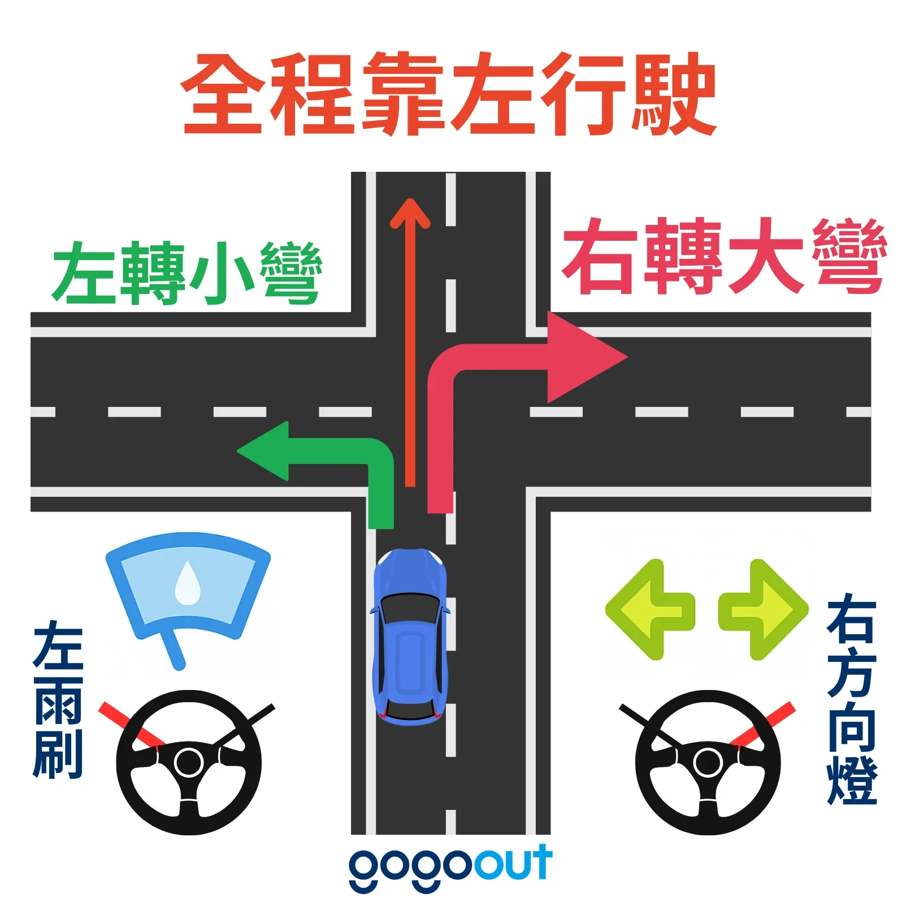
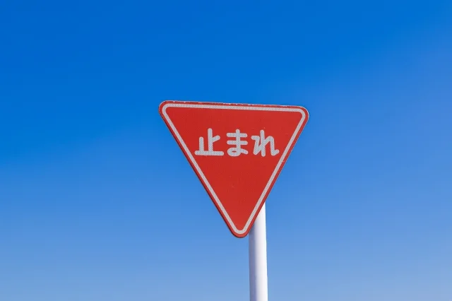
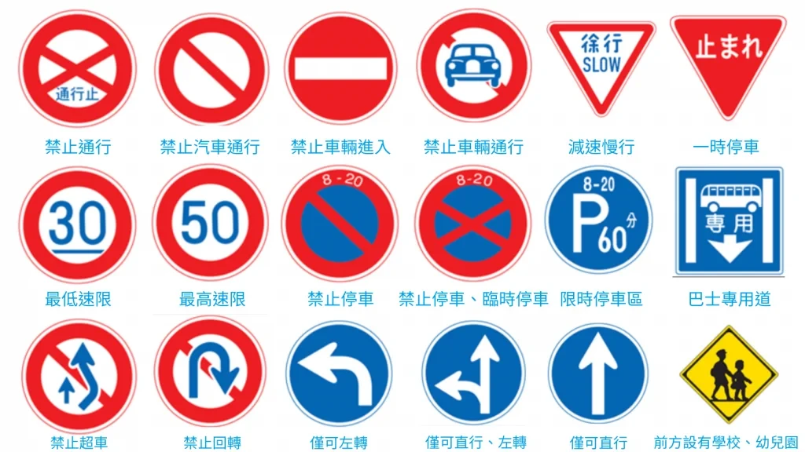

5 台車 · 每位駕駛必看
沖繩自駕須知
日本靠左行駛、駕駛座在右，和台灣相反。轉彎和路口最容易出錯。
譯本台灣駕照＋日文譯本
不用國際駕照
不用國際駕照
110出事故一定要報警
不然保險不賠
不然保險不賠
満タン還車前加滿
收據留著
收據留著
駕駛要帶
1取車時
- 繞車一圈拍照或錄影刮痕、凹痕、輪框都拍，還車有爭議時用得到
- 問清楚這 4 件事
- 油種（多半是「レギュラー」一般汽油）
- 加油口在左還右
- 還車時間、地點、到機場的接駁
- 有沒有 ETC 卡（上高速公路用）
- 出發前在停車場先熟悉調好座椅、後照鏡，試一下方向燈：撥桿和台灣相反
- 設定導航手機 Google 地圖最直覺；車上導航可以輸入電話號碼或 Mapcode。Mapcode 查法：把地址貼到 Mapion → 右上角「便利ツール」→「地図URL」
2和台灣不一樣的規則

- 靠左行駛：左轉小彎、右轉大彎，轉完回到左側車道
- 右轉最危險：右轉要跨過對向車道（像台灣的左轉），等對向直行車過完再轉
- 雨刷在左、方向燈在右：打錯開到雨刷很正常，別慌
- 紅色倒三角「止まれ」、閃爍紅燈、平交道：一定要完全停住，確認左右沒車再走

- 路權：直行車優先，右轉車最後；從小路匯入要等主幹道沒車
- 紅燈＋綠色箭頭：只能往箭頭方向走；閃爍黃燈要減速、確認沒車再過
- 車道線：黃線不能跨越超車或變換車道；白色實線不要跨，白色虛線可以變換車道
- 禮讓行人：轉彎遇到行人一定要停
- 開車不能用手機：接電話也不行
- 全車都要繫安全帶：後座也是
- 酒駕零容忍：連同車乘客都會罰
- 速限：有速限標誌就照標誌；沖繩自動車道 80 km/h
- 新規定（2026/9/1 起）：沒有中央線、也沒有車道線的道路（巷弄、住宅區小路），沒有標誌也一律 30 km/h（原本 60）；有中央線的道路沒標誌仍是 60 km/h
- 巴士專用道：那霸市區平日上下班時段有，路面寫「バス専用」、路旁有藍色「專用」標誌，時段內不要開進去
日本罰款很重，超速、違停、沒停「止まれ」、開車用手機都會被開單，照規定開就對了。
常見標誌

測速照相
- 沖繩高速公路上有固定式測速照相，各地也有移動式測速
Orbis Guide 測速地圖網頁版，出發前先看一次測速位置
オービスガイド（免費版）開車時接近測速點會提醒，可以跟導航 App 同時用；iPhone 版要日本區 Apple ID 才能下載
3高速公路・ETC
- 沖繩只有一條高速公路：沖繩自動車道，那霸 IC ⇄ 許田 IC，約 57 km
- 收費站設在各交流道的出入口
- 紫色「ETC」車道：要先跟租車公司預約 ETC 卡，過路費還車時結算；沒有 ETC 卡就走「一般」車道，入口取通行券、出口付現金
- 進 ETC 車道減速到 20 km/h 以下、一台一台過；柵欄沒開就停住，絕對不要倒車，按對講機等工作人員
- 普通車：那霸 IC→許田 IC ETC ¥1,040／現金 ¥1,610；那霸 IC→沖繩南 IC ETC ¥420／現金 ¥650
主要交流道
4停車
- 一律停正規停車場，路邊違停會被開單
- 路邊黃色虛線：只能短暫停車，人不能離開車；黃色實線：完全不能停
- 「月極駐車場」是月租停車場，不能停，停了可能被上鎖
- 收費牌要看清楚：平日／土日祝、白天／夜間價格不同；「最大」上限通常有條件（例如入庫後 12 小時），旁邊小字要看
- 投幣式停車場（コインパーキング）：離開前到繳費機輸入車位號碼付錢
- 美國村免費停車場：見 行程頁 11/7
- 燒肉店停車場指標不明顯，5 台車分開找位
停車場查詢
PPPark!輸入停車時間，附近停車場依價格排序；網頁版不用下載。iPhone 版要日本區 Apple ID 才能下載
タイムズの駐車場検索只查 Times 停車場，但會即時顯示滿位／有空位
5加油＆還車
加油站常見字
| 英文／日文 | 意思 |
|---|---|
| Self Service／セルフ | 自助加油 |
| Full Service／フルサービス | 店員幫你加 |
| Regular／レギュラー | 一般汽油（紅色油槍），租車幾乎都加這個 |
| Premium／ハイオク | 高級汽油（黃色油槍） |
| Diesel／軽油 | 柴油（綠色油槍），汽油車加了引擎會壞 |
| Full Tank／満タン | 加滿 |
| Cash／現金 Credit／クレジット | 付款方式 |
- 找租車公司附近的加油站導航搜尋「ガソリンスタンド」或 ENEOS 等品牌名
- 店員加說「Regular, full tank」或「レギュラー、満タン」，加好後付現金或刷卡
- 自助加
- 螢幕依序選：付款方式 → Regular → Full Tank（有的機台可切換 English）
- 先摸一下靜電消除板（静電気除去シート）再開油箱蓋
- 加完把油槍掛回去，拿收據
- 加滿、收據留著大多要滿油還車，沒加滿會被收代加油費；有些租車公司會要求看加油收據
- 還車＋接駁到機場，預留 30–60 分鐘有免稅品的話，再多留退稅海關確認的時間
6發生事故
- 先確認人員安全、照顧傷者
- 從四周拍照擋到車流的話，拍完先把車移到路邊，避免後車追撞
- 放三角錐警示後車，打 110 報警再小的擦撞都要報警
- 打給租車公司電話在租車合約或車上貼紙
- 跟警察拿「事故證明」沒有事故證明，保險不理賠；不要私下和解
緊急電話 警察 110 ／ 救護車・消防 119
7收到罰單
- 帶罰單到警察局（交番）領繳費單不要請租車公司代繳，會多收手續費
- 期限內帶繳費單和現金到銀行或郵局繳
- 收據留著，還車時連同罰單出示
資料來源
- gogoout：沖繩自駕必看攻略（含本頁靠左行駛、止まれ、常見標誌圖片）
- Funliday：沖繩租車規則與注意事項
- Funtime：沖繩租車比較與保險（CDW／NOC）
- Watabi：日本自駕指南
- 公視：台灣旅客沖繩自駕右轉對撞事故
- JAF Mate：2026/9/1 起生活道路法定速度 30 km/h
- くるまのニュース：法定速度 60→30 km 對象道路的分辨方法
- Car.Tabee：沖繩自動車道交流道一覽
- 沖繩自動車道的特徵與代表性收費表
- Tabirai：沖繩高速公路收費、交流道鄰近景點
- NEXCO 西日本：ETC 車道安全通行
- Japan Travel：Driving in Japan: How to Fill Up
- Japan Travel：Self Service Gas Stations Guide
- Tabimania Japan：Japan Gas Station Guide
- Orbis Guide：測速照相地圖
- Funliday：沖繩自駕停車場查詢 App
整理於 2026/11/04。規定以租車公司說明與日本警方為準。